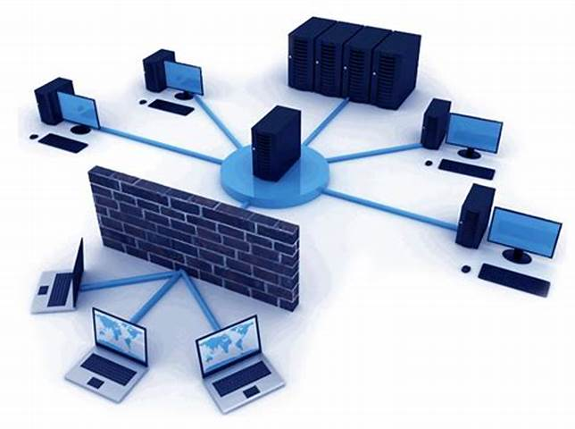
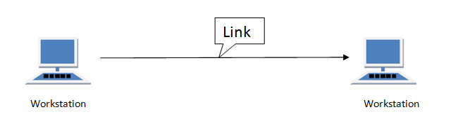
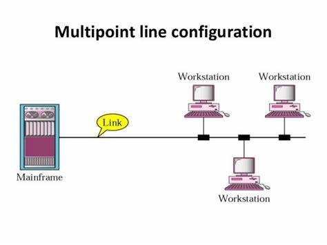

-
- What is line Configuration
- Type of line Configuration
- About Network Topology
- Types of Topologies
- Mesh Topology
- Ring Topology
- Star Topology
- Bus Topology
- Hybrid Topology
- Hub and switch
Introduction
The Computer Network helps interconnect to two or more Computer to sharing resources or information.Now a days too much important's of Computer Network in file sharing,user communication.These work
without Computer Network is not possible.

Advantage
Disadvantage
Note:-Only physically Connection of the Computer Network is not a Computer Networking. Two Computer that are
completely connected to each other both have ability to read data of each other.
| Connected + | Configuration = | Computer Networking |
Home Bottom
Line Configuration
The line Configuration is a physical communication path way that transfer from one to another device.
Types of Line Configuration
Point to Point connection-It has dedicated and direct links between two device.
Multi-Point Connection-It has more than two Computer connected with single link.

Home Bottom
Transmission Modes(Data flow)

Simplex-Only sender can send data.
eg:- keyboard & monitor.
Half Duplex-Only one time sender send and recieve data.
eg:- Walkie Talkie.
Duplex/Full-Duplex-sender can send & recieve data simultaneously.
No limit or boundation to send or recieve.
eg:- Telephone.

Diffrence between Simplex,Half Duplex & Duplex
| Simplex | Half Duplex | Full-Duplex/Duplex |
|---|---|---|
| Communication is unidirectional. | Communication is two-directional but, one at a time. | Communication is two directional and done simultaneously. |
| A sender can send data but, can not receive. | A sender can send as well as receive the data but one at a time. | A sender can send as well as receive the data simultaneously. |
| The half duplex and full duplex yields better performance than the Simplex. | The full duplex mode yields higher performance than half duplex. | Full duplex has better performance as it doubles the utilization of bandwidth. |
The full duplex transmission modes offer the better performance and also increases the throughput of the bandwidth.
Home Bottom